R. Kent Dybvig
Indiana University Computer Science Department
Bloomington, IN 47405
dyb@cs.indiana.edu
Copyright c 1992 R. Kent Dybvig
August 1992
Abstract
This article describes a pattern-based hygienic macro system for Scheme and provides numerous examples of its use. Macros defined using this system are automatically hygienic and referentially transparent. Unlike earlier hygienic macro systems, this system does not require “low level” macros to be written in a different style from “high level” macros. In particular, automatic hygiene, referential transparency, and the ability to use patterns extend to all macro definitions, and there is never any need to explicitly manipulate syntactic environments of any kind. The macro system also supplies a hygiene-preserving mechanism for controlled variable capture, allowing macros to introduce implicit identifier bindings or references.
This article describes a hygienic macro system for Scheme that is similar to the one documented in an appendix to the “Revised4 Report on the Algorithmic Language Scheme” [2], with several important differences. Most importantly, there is no practical distinction in this system between “high level” and “low level” macros. Although some macros will not take advantage of the more primitive operators, there is no penalty in terms of loss of automatic hygiene, referential transparency, or ease-of-use for those macros that do. In particular, the same pattern matching facilities that were previously available only to high-level macros can now be used in any context. There is never any need to completely rewrite a macro originally written in a high-level style simply because it now requires access to some more primitive feature. Furthermore, there is never any need to explicitly manipulate syntactic environments of any kind.
The macro system consists of a set of defining forms, a set of forms for taking apart and putting together syntax, and a set of primitives for manipulating and comparing identifiers. The system is based on a representation of expressions as abstract objects that are different from the commonly used Scheme (datum) representations. Macro transformers take syntax objects as input and return (expanded) syntax objects as output. Embedded within each syntax object is sufficient information to determine the bindings of all identifiers contained within the syntax object, along with an internal representation of the syntactic form itself. Other implementation-dependent information may be contained within a syntax object; for example, the position of the expression in the original source code may be included for debugging purposes.
The next section of this article attempts to clearly define the terminology used and the syntactic forms and primitive operators supplied by the macro system (Section 2). The following section demonstrates through a series of examples how easy it is to write macros, ranging from simple to complex, using this system (Section 3). The reader may prefer to skip over Section 2 on first reading and return to it after working through some of the examples in Section 3. Although this is not intended to serve as a complete implementors’ guide, a theory of operation is given to help macro writers understand the expansion process (Section 4).
In order to fully understand the examples in this article, it is necessary to have a good understanding of Scheme, and helpful but not necessary to have studied or used extend-syntax [5, 3] or the high-level system documented in the Revised4 Report.
This article is intended to instruct potential macro-system users how to use the system; there is no attempt at justification or comparison with other systems. A more formal treatment of this macro system and its implementation, along with background information on this and other macro systems is given in [4].
A complete implementation of the macro system is available, and should run in any Scheme system with the provision of a few implementation-dependent “hooks.” It can be obtained via “anonymous ftp” from moose.cs.indiana.edu in the directory pub/scheme/syntax-case.
New macros are defined to extend the set of syntactic forms available within a program or subprogram. All extended syntactic forms, also referred to as “macro calls,” take the form:
where keyword is an identifier that names a macro. The syntax of subform is determined by the macro and can vary significantly from macro to macro. The mechanisms for establishing new keyword bindings and for writing macros are described in the remainder of this section. Extensive examples demonstrating the use of each of the features described in this section are given in the following section.
Macros defined using these facilities are automatically hygienic [6]. If a macro transformer inserts a binding for an identifier (variable or keyword), the new binding will not capture other identifiers (even of the same name) introduced elsewhere. Macros defined using these facilities are also referentially transparent [1]. If a macro transformer inserts a free reference to an identifier, the reference refers to the binding that was visible where the transformer was specified, regardless of any local bindings that may surround the use of the macro. In order to maintain these two properties, bound identifiers introduced by macros are renamed, at least in effect, to avoid potential conflicts.
Although this is almost always the desired behavior, it is sometimes desirable to insert identifiers into the output of a macro that behave as if they had been present in the original expression. That is, it is sometimes desirable for inserted identifiers to be bound (captured) by existing bindings or for inserted bindings to bind (capture) existing references. A mechanism for doing this in a controlled, hygiene-preserving manner is described at the end of this section.
New syntactic forms are defined by associating an identifier, or keyword , with a transformation procedure, or transformer . At top level, syntactic definitions take the form of:

The transformer-expression must be an expression that evaluates to a transformer. When the expander encounters an expression of the form (keyword . subform ), the expression is passed to the associated transformer for processing. The scope of syntactic definitions can be limited by using one of the lexical binding forms:
In both of these forms the keyword denotes new syntax in body; in the case of letrec-syntax the binding scope also includes each transformer-expression.
Lexical macro keyword bindings, ordinary lexical variable bindings, and pattern variable bindings (introduced below) can shadow each other, and any lexical binding shadows a top-level binding for the same identifier. Any define-syntax forms appearing within the definitions at the front of a lambda body (or other similar body) are treated as letrec-syntax bindings.
Macro transformers are procedures of one argument. The argument to a macro transformer is a syntax object, which contains contextual information about an expression in addition to its structure. This contextual information enables the macro system to determine, for each identifier contained within the expression, to which binding the identifier refers. This information is required to maintain hygiene and referential transparency. This same information also allows macro transformers to compare identifiers according to their intended use as free identifiers, bound identifiers, or data. Syntax objects may contain other syntactic information that is not of direct interest to the macro writer. For example, syntax objects can contain source annotations that allow the evaluator to correlate the final object code with the source code that produced it.
The output from a transformer may itself be a macro call or contain macro calls, in which case further expansion is performed until no macro calls remain.
Transformers decompose their input using syntax-case and rebuild their output using syntax. A syntax-case expression takes the following form:

Each clause takes one of the following two forms:

syntax-case first evaluates input-expression, then attempts to match the resulting value with the pattern from the first clause. This value is usually a syntax object, but it may be any Scheme list structure. If the value matches the pattern, and there is no fender present, output-expression is evaluated and its value returned as the value of the syntax-case expression. If the value does not match the pattern, the value is compared against the next clause, and so on. An error is signaled if the value does not match any of the patterns.
Patterns consist of list structures, identifiers, and constants. Each identifier within a pattern is either a literal, a pattern variable, or the special identifier . . . , which represents an ellipsis. Any identifier other than . . . is a literal if it appears in the list of literals (literal . . . ) in the syntax-case expression; otherwise it is a pattern variable. Literals serve as auxiliary keywords, such as else in case and cond expressions. List structure within a pattern specifies the basic structure required of the input, pattern variables specify arbitrary substructure, and literals and constants specify atomic pieces that must match exactly. Ellipses specify repeated occurrences of the subpatterns they follow.
An input form F matches a pattern P if and only if:
P is a pattern variable;
P is a literal identifier and F is an identifier with the same binding; or
P is a pattern list (P1 . . . Pn ) and F is a list of n forms that match P1 through Pn , respectively; or
P is an improper pattern list (P1 P2 . . . Pn . Pn+1 ) and F is a list or improper list of n or more forms that match P1 through Pn , respectively, and whose nth “cdr” matches Pn+1 ; or
P is of the form (P1 . . . Pn Pn+1 ellipsis ) where ellipsis is the identifier . . . and F is a proper list of at least n elements, the first n of which match P1 through Pn , respectively, and each remaining element of F matches Pn+1 ; or
P is a pattern datum and F is equal to P in the sense of the equal? procedure.
If the optional fender is present, it serves as an additional constraint on acceptance of a clause. If the value of input-expression matches the pattern for a given clause, the corresponding fender is evaluated. If fender evaluates to a true value the clause is accepted, otherwise the clause is rejected as if the input had failed to match the pattern. Fenders are logically a part of the matching process, i.e., they specify additional matching constraints beyond the basic structure of an expression.
Pattern variables contained within a clause’s pattern are bound to the corresponding pieces of the input value within the clause’s fender (if present) and output-expression. Although pattern variable bindings created by syntax-case can shadow (and be shadowed by) lexical and macro keyword bindings, pattern variables can be referenced only within syntax expressions. Scheme syntax expressions have the following form:

A syntax form returns a Scheme object in much the same way as quote or quasiquote, with two important differences: the values of pattern variables appearing within template are inserted into template, and contextual syntactic information contained within template is retained. All list structure within template remains ordinary list structure in the output, and all other items (including identifiers) are inserted without further interpretation. Contextual information associated with the values of inserted pattern variables and any nonlist items from the template is retained in the output.
Within a template, a subtemplate followed by an ellipsis expands into zero or more occurrences of the subtemplate. The subtemplate must contain at least one pattern variable that was in a subpattern followed by an ellipsis in the input. (Otherwise, the expander could not determine how many times the subform should be repeated in the output.) This generalizes in a natural way to nested ellipses. There is one exception to this rule: the special template ( . . . . . . ) expands into . . . . This is used by macro-defining macros to introduce ellipses into the defined macros.
A pattern variable that occurs in a syntax template is replaced by the subform it matched in the syntax-case expression that established the pattern variable’s binding. Pattern variables that occur in subpatterns followed by one or more ellipses may occur only in subtemplates that are followed by (at least) as many ellipses in a syntax template, in which case they are replaced in the output by all of the subforms they matched in the input.
It is an error for a transformer to return a “raw” symbol; all names returned by a transformer must be identifiers introduced by syntax expressions. In other words, if a transformer returns a symbol, the behavior is undefined.
The system provides three predicates for recognizing and comparing identifiers(The term identifier is used throughout as shorthand for “syntax object representing an identifier.”): identifier?, free-identifier=?, and bound-identifier=?. The predicate identifier? returns true if and only if its argument is an identifier.
The predicates free-identifier=? and bound-identifier=? are used to determine whether two identifiers are equal based on their intended use as free or bound identifiers in the output of a macro. When it is necessary to determine if a binding introduced for one identifier would bind references to another, the predicate bound-identifier=? is used. Two identifiers are bound-identifier=? only if both have the same name and both were present in the original program or both were introduced by the same macro application. The predicate bound-identifier=? can be used for detecting duplicate variable names in a binding construct, or for other preprocessing of a binding construct that requires detecting instances of the bound variables. When it is necessary to determine if two identifiers, inserted as free references, would both refer to the same binding, the predicate free-identifier=? is used. Literal identifiers appearing in syntax-case patterns (such as else in cond) are matched using free-identifier=?.
Two identifiers may be free-identifier=? if they are not bound-identifier=?, but the converse is never true. In general, when two identifiers are introduced at different macro expansion steps but both would refer to the same binding if inserted as free references, they are free-identifier=? but not bound-identifier=?.
On rare occasions, it is necessary to compare two identifiers that will be inserted as symbolic (quoted) data in the output of a macro. No predicate for directly comparing two identifiers that will be used as symbolic data is provided; however, it is simple to define one in terms of syntax-object >datum, which extracts the “raw” datum from any syntax object:
It is never necessary to generate a single unique name for insertion in the output of a macro, as is often necessary in nonhygienic systems, since inserted bindings are, in effect, renamed as necessary. However, it is sometimes convenient to be able to create a list of temporary names. The procedure generate-temporaries is used for this purpose. This procedure takes a list as input and returns a list of new identifiers, one for each element in the input list. The actual elements of the input list are ignored. Typically, the list passed to generate-temporaries is a list of subforms from the input to a macro where the number of subforms determines the number of temporaries required. (See the letrec example in the next section.)
Occasionally it is useful to define macros that introduce visible bindings for identifiers that are not supplied explicitly in a macro call. For example, we might wish to define a loop macro that binds the implicit variable exit to an escape procedure within the loop body. This can be done using the procedure implicit-identifier. The procedure implicit-identifier, given a template identifier and a symbol as arguments, creates an identifier named by the symbol that behaves as if it had been introduced at the same time and place as the template identifier. The template identifier is often the macro keyword itself, extracted from the input, and the symbol is the symbolic name of the identifier to be constructed. Section 3 presents several examples using implicit-identifier.
Many syntax errors are reported automatically by syntax-case when none of the clauses are selected. Sometimes, however, the error messages produced are misleading (for example, if syntax-case is applied to only a portion of the input) or less informative than desired. The procedure syntax-error can be used to signal an error explicitly. This procedure accepts one or more arguments: the first argument is a syntax object (which is always stripped of all syntactic information for readability), and the remaining arguments are strings describing the error. If no string arguments are supplied, a default message such as “invalid syntax” is printed along with the stripped first argument.
This section contains a sequence of annotated example macro definitions, beginning with a few simple macros and graduating to more complex macros. Each of the syntactic forms and procedures described in the preceding section are demonstrated, most more than once. Many of the examples define standard Revised4 Report derived syntactic forms under the assumption that the reader is already familiar with their syntax and semantics.
Within the code, syntactic keywords appear in boldface, e.g., lambda; lexical variables, toplevel variables, and pattern variables appear in italics, e.g., x; and comments and constants appear in Roman, e.g., “okay”.
The first example is a very simple macro for a two-subexpression variant and2 of the standard syntactic form and.

The define-syntax expression establishes a binding for the and2 keyword to the specified transformer. The syntax object provided as input to the transformer is handed to syntax-case; ultimately, almost nothing can be done with syntax objects except by way of syntax-case. The syntax-case expression contains only one clause. The input pattern, (_ x y ), specifies that, in addition to the macro keyword, this form requires exactly two subexpressions and that the pattern variables x and y are to be bound to the corresponding pieces of the input. The output expression simply returns a new expression defined in terms of these pattern variable.
There are three things worth noting even in this simple example. First, output generated by macros is generated, directly or indirectly, by syntax forms. The syntax form serves two purposes: it expands pattern variables into the corresponding subforms of the input, and it retains information regarding lexical variable bindings and other contextual information with the output form. In this example, this contextual information helps determine that the if in the output refers to the toplevel binding for if and not to some other binding for if. If, on the other hand, there were a local binding for if visible where this macro was defined, the contextual information would ensure that if referred to that local binding and not to the top-level binding (or any other binding).
Second, the pattern variable x appearing in the input pattern shadows the lexical variable x bound by the enclosing lambda expression. If x were referenced within the output expression but outside of the syntax form, it would be an error. It is always possible to locate the binding for an identifier by tracing outwards to find the nearest enclosing binding form that binds the identifier; if no such form exists, the identifier refers to a top-level binding. Local binding forms include lambda, let, letrec, do, let-syntax, letrec-syntax, internal define and define-syntax, syntax-case, and any macro that expands into one of these forms.
Third, the pattern variable underscore (_) is used in this example and throughout most of the examples where the macro keyword will appear in the input expression. This is a convention only; any pattern variable may be used here, including the name of the macro itself. This convention helps to remind the macro writer and anyone who reads the code that the keyword position never fails to contain the expected keyword and need not be matched. This convention can also help avoid confusion when defining local macros with let-syntax. (See the discussion surrounding the local if examples that appear later in this section.)
The next two examples, defining the when and unless forms found in many Scheme implementations, demonstrate the use of ellipses for specifying multiple subforms:
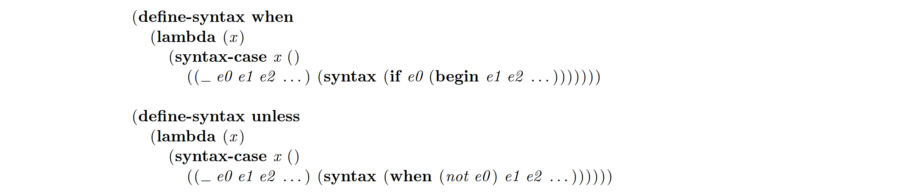In both cases, the expansions clearly show what when and unless are intended to do: when evaluates the test expression e0 and, if it evaluates to true, returns the result of evaluating the remaining subforms in sequence. The sense of the test is reversed in the unless form, which also demonstrates that the output of one macro may be defined in terms of another. Both require at least one subexpression, e1, following the test expression, and zero or more additional forms, e2 . . . .
A when form expands into references to the macro keywords if and begin, and an unless form expands into references to the macro keyword when and to the variable not. In a nonhygienic system, local bindings for any of these identifiers in the context of a when or unless expression could alter the semantics of the construct. With the definitions above, however, this is not a problem, so the following expressions both print “win” as desired:

Either of these macros might just as easily have been defined as local macros using let-syntax or letrec-syntax. For example:
In this case, it does not matter which of let-syntax or letrec-syntax is used, since the macro keyword when does not appear within the transformer expression. The choice is important in the following recursively-defined macro for and generalized to zero or more subforms:
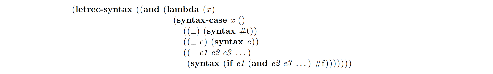The second clause defines the base case for the recursion (one subexpression), and the third clause defines the recursive case (two or more subexpressions). The first clause specifies what happens when there are no subexpressions. During the expansion for (and x y z ) we would expect to have the following intermediate and final forms:

Since the macro for and is recursive, it must be defined using define-syntax or letrec-syntax but not let-syntax. With let-syntax, the and in the output of the third clause would refer to the top-level definition for and. (Of course, if you try this in your Scheme system, it will probably appear to work since and is defined at top-level to do exactly the same thing. Try using let-syntax but with a different name, say myand, to see what happens.)
The macros defined so far have not introduced any new bindings. The following definition for or does:
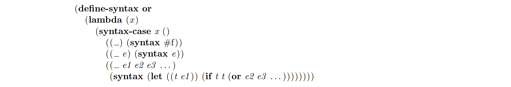An or expression must return the value of the first subexpression that evaluates to a true (nonfalse) value, or #f if none evaluate to true (or if there are none). If there is more than one subexpression, it must both test the value of the first subexpression by placing it in the test part of an if expression, and return its value if it does evaluate to a true value. In order to avoid evaluating the expression twice, a temporary variable t is introduced. Because the system maintains hygiene automatically, this binding is visible only to code introduced by the macro and not to code contained within the input to the macro. Thus, the following correctly evaluates to “okay”, although without automatic hygiene it would evaluate to #f since the reference to t in the second subexpression would be captured by the introduced binding for t.

It is useful to think of the bound variable as being automatically renamed to avoid conflicts, which is in fact how an implementation might work. Thus, the final output of the expander might look something like:
where g0001 and g0002 are generated names. (For debugging purposes, the actual output would likely include the original names as well, or these might be recorded in a separate table provided to the compiler or system debugger.) See Section 4 for more information on and examples of the expansion process.
Identifiers bound by introduced bindings need not be new identifiers inserted by the macro, but may be identifiers extracted from the input to the macro. For example, if (unnamed) let were not provided by the system, it could be defined simply as follows:
(This is the first in a series of let definitions, hence the subscript.) This example also demonstrates that patterns can contain more than one ellipsis and that the subpattern preceding an ellipsis can be a structured pattern containing one or more pattern variables. It also shows that pieces of such a pattern can be split up in the output, as are i and v, which appear together in the input and separate in the output.
A definition for let that includes named let is given below:

The first clause is identical to the version above; the second clause defines the named let form in terms of letrec. The order of the two clauses is important. A named let cannot match the first clause since ((i v ) . . . ) cannot match an identifier. However, if the clauses were reversed, some unnamed let expressions would match the named let clause, since the pattern variable name matches anything.
To avoid this problem, we could introduce a fender to “fend off” unwanted matches:


The fender here uses the identifier? predicate to ensure that name is an identifier. The syntax wrapped around name is necessary even in a fender, as it is anywhere pattern variables are referenced, and arbitrary syntax forms may be used within the fender, just as they can be within the output expression.
The definitions above produce correct output when handed correct input, and they automatically check (via syntax-case) for basic structural errors in the input. However, they do not ensure that the bound identifiers are indeed identifiers. The following version uses a local help function called from within the fenders to perform this check:

These fenders successfully reject input expressions that do not have identifiers where they are expected, but the resulting error message reported will not say why the input was rejected. We can refine the macro to do so by moving the test into the output expression and calling syntax-error directly:
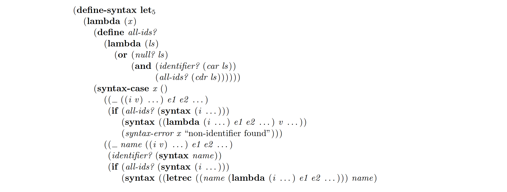
The check to make sure name is an identifier is left as a fender in the last clause, since failure of that test may be due to a more general syntax error, e.g.:

Now suppose we are handed a form containing duplicate bound identifiers:

The following version checks for this condition as well:
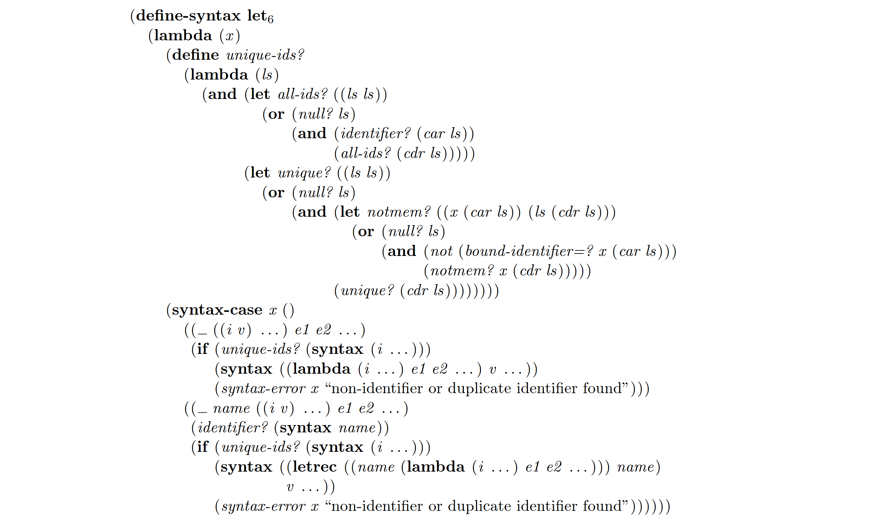Using bound-identifier=? allows let to reject only those forms that would result in a conflict. If the definition were to employ free-identifier=? instead, the following correct program would be rejected:

Although the macro call (f b) apparently expands into (let ((b 1) (b 2)) (+ b b)), this program is actually correct because the introduced identifier b is renamed to avoid any such conflicts. However, since both occurrences of b, if left as free references, would refer to the same (top-level) binding for b, free-identifier=? would not distinguish them. Since the intended use in this case is as bound variables, the predicate bound-identifier=? is used instead.
This sequence of let definitions ends with the following version of let that allows the value expressions to be “implicit begin” expressions:

Although let7 is not a particularly useful construct since the order of evaluation of lambda arguments (and let value expressions) is unspecified, this example does serve to illustrate the use of nested ellipses.
Some of the let examples above employ help procedures bound named by locally-bound identifiers, and virtually all transformers refer to their arguments. These identifier bindings must be available for reference at expansion time in order for this to work. The bindings for some identifiers are established at expansion time, while others are not established until run time. Run-time identifiers may not be used within transformers (except within syntax expressions), and references to expansion-time identifiers must not appear in the output of a transformer. The following expression should produce an “invalid reference” error:

This is an error because the transformer, which runs at expansion time, attempts to reference the identifier x, which is not bound until run time. The following example should also produce an invalid reference error:

This is because the transformer expands into a (run-time) reference to the variable y, which is available only at expansion time.
It is not always an error for an identifier with an expansion-time binding to be inserted into the output of a transformer, since it is not an error to use it as as symbolic data or as a bound identifier. The following example is similar to the preceding one, except that the inserted identifier ends up being used as symbolic data:
This expands into (quote y) and evaluates to y. Naturally, quote need not appear explicitly in the example above as long as the output ultimately expands into a quote expression containing y. In general, therefore, this kind of error is not detected until the identifier’s role is determined, which may happen long after the transformer has returned.
Sometimes it is useful to create pattern variable bindings to hold intermediate output within the body of a macro. For this purpose, we can define a local binding operator for pattern variables similar to let for ordinary variables. The with-syntax form defined below expands into a syntax-case expression with a single clause:
The following definition for or uses with-syntax in its third clause to build up a piece of its output separately from the whole:
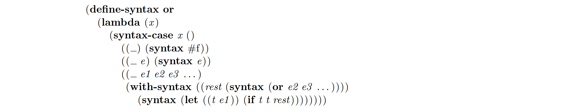The definition for do below shows a more realistic use for with-syntax:


This definition is ungraceful, but then so is do with its optional steps and optional return-value expressions.
The with-syntax form can also be used to bind pattern variables to output from help functions, as in the definition for letrec below:
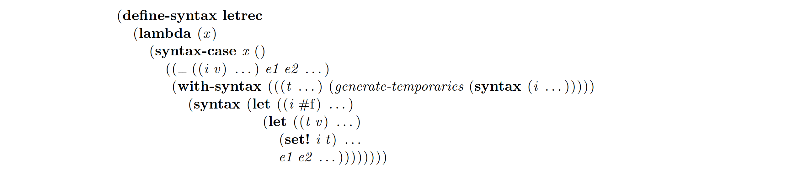The cond syntactic form is one of the most complex built-in forms, yet to come up with a macro for cond that works is not terribly difficult. We show here a series of definitions of cond each with different properties.
Here is the first and simplest definition in the series:
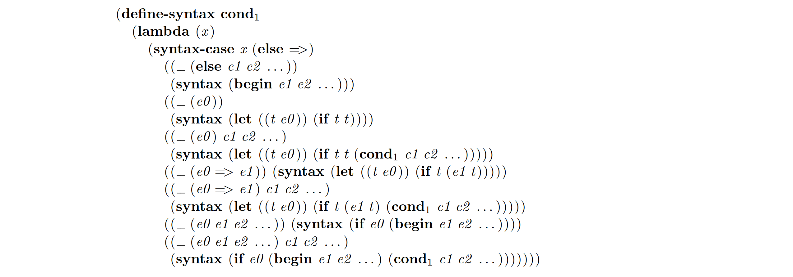Notice the appearance of else and => in the literals list. This informs syntax-case that when these identifiers appear in the pattern, they are literals rather than pattern variables. The order of the clauses in this definition is important, although some rearrangement could be done. In general, more specific patterns must appear before more general patterns that might also match the same input, so the (_ (else e1 e2 . . . ) . . . ) pattern must appear before the (_ (e0 e1 e2 ) . . . ) pattern, and the patterns that check for => must appear before the last two patterns.
The output of the second clause could simply be (syntax e0 ):
However, we choose to use the more complicated form to avoid specifying a return result when e0 evaluates to false. Instead, the (implementation-dependent) value is determined by the else-less if expression.
The output of the third clause above could be written in terms of or, though we choose not to for consistency with the preceding clause.
The next version of cond shows how free-identifier=? could be used in place of the syntax-case literals list. It also provides a good example of the use of fenders:

There is nothing wrong with the output from either of the two versions of cond above, but because of their recursive nature, it is possible to get a slightly strange error message when some clause other than the first is malformed. For example, the syntax error reported when the input is (cond (x ) (y . z )) might be:
The following example of cond is more complex than the previous two because it recurs internally so that it always has a handle on the original input expression. It also contains an explicit error clause in which it calls syntax-error directly. It uses with-syntax, which was defined earlier.
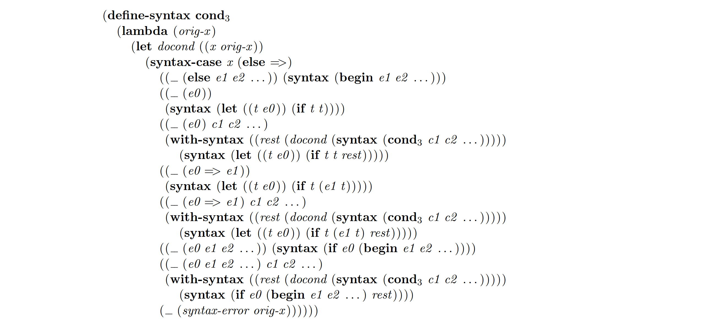The versions of cond shown so far all have two cases for most of the types of clauses, one for when there are no subsequent clauses and one for when there are subsequent clauses. This is necessary since the obvious “base” case for the recursion, (cond), is invalid syntax. The next three examples commonize the various clauses by determining the “tail” of the generated if expression before constructing the output; this tail is either empty or contains one subexpression, so that the generated if expressions contain an else part only if there are more clauses.
The first of this set of definitions uses a local help function, cond-if-tail, to construct the if tail:

The next version constructs the tail before even looking at the current clause, and uses simplified patterns to be matched only against the current clause. Since it does use a simplified pattern, it must generate an error explicitly to make it clear that the error is caused by a malformed cond expression.

If the explicit error clause were omitted, (cond (x ) (y . z )) would cause the error system to report an error something like:

However, just as in the first two versions of cond, the syntax error in (cond (x ) (y . z )) would still be reported as an error in (cond (y . z )). The version below combines the techniques from the preceding version and the earlier version that recurs internally to get this right:
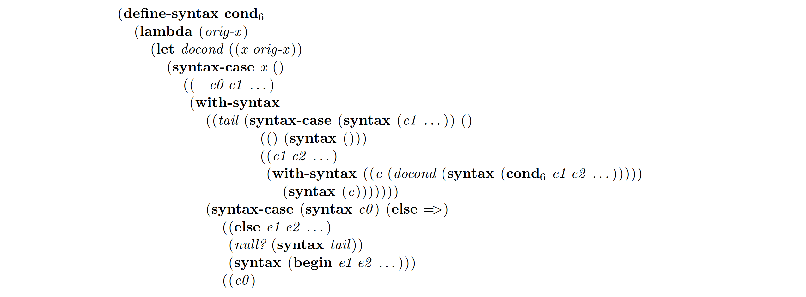
The final definition of cond below expands into a pair of mutually recursive local macros that perform the expansion. Although it works and even reports errors in terms of the original cond expression, it is not as straightforward as the previous definitions. Furthermore, it is likely to be much less efficient than the previous versions, since it requires two new macro transformers to be constructed and evaluated each time a cond expression occurs in a program. It does, however, demonstrate how local macro definitions may be inserted into the output of a macro to perform additional complex processing of the input.
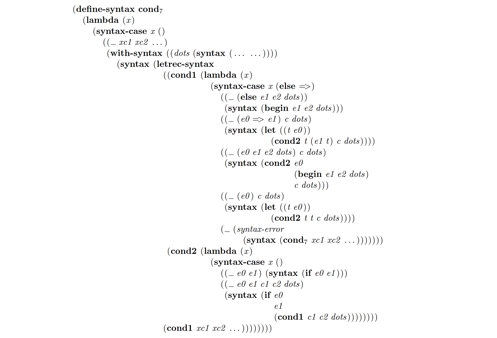The ( . . . . . . ) “escape” is used to introduce ellipses into the generated macros. The be-like-begin macro definitions shown later in this section provide a simpler demonstration of this feature.
A local macro may be written in terms of an existing syntactic form or procedure of the same name using let-syntax, although it is somewhat tricky to do so and not usually a good idea. The following shows how one might restrict if expressions within a given expression to require the “else” (alternative) part:
The expression above evaluates to 2. If, however, the body were (if 1 2), a syntax error would result.
Although the definition above looks simple enough, there are several ways in which an attempt to write this macro could easily have gone wrong. First, it would not work if letrec-syntax were used instead of let-syntax. In this case, the identifier if inserted into the local macro’s output would refer to the local if, rather than the top-level if, and expansion would loop indefinitely. Next, if the definition were specified as in the following:
expansion would again loop indefinitely. The reason is that the identifier if appearing at the start of the pattern is treated as a pattern variable, even though it is within the definition for the keyword if. Thus, it is bound to the corresponding identifier if from the input expression, which denotes the local binding of if. Finally, placing if in the list of literals in an attempt to patch up the latter version would not work either:
This would cause syntax-case to compare the literal if in the pattern, which is scoped outside of the let-syntax expression, with the if in the input expression, which is scoped inside the let-syntax. Since they do not refer to the same binding, they are not free-identifier=?. The result is a syntax error.
The conventional use of _ in place of the macro keyword helps the macro writer to avoid situations like those above where the wrong identifier is matched against or inserted by accident. What if a local macro must be defined in terms of an existing binding for the macro keyword, but the local macro must be defined recursively? This could be done by using an internal recursion similar to that used in some of the let and cond examples above. But it can also be done by observing that the problem with the second if example above can actually be used to advantage. The following local definition for if is a more general form that allows zero or more test/consequent pairs possibly followed by an alternative:
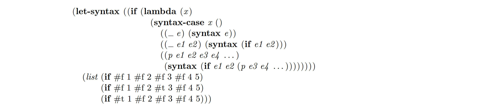Here we use a pattern variable p to pick up the identifier if from the input that carries with it the local binding for if so that we can use it in the recursion step. Thus, when we refer to if in the output, it is the top-level if, but when we refer to p, it is the local if.
Although this works, the best solution is to name the local macro something different from the top-level macro and to use letrec-syntax to support the recursion.
The macro appendix of the Revised4 Report on Scheme provides a syntax-rules form that is a restricted variant of syntax-case. Here is how it can be defined in terms of syntax-case:
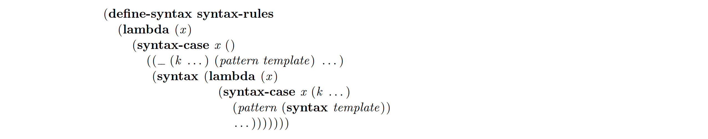syntax-rules differs from syntax-case in three ways. First, syntax-rules must itself evaluate to a transformer (procedure), so it expands into a lambda expression. Second, syntax-rules does not support fenders. Third, the output part of a syntax-rules clause is always a syntax template rather than an arbitrary expression, so it expands into a syntax form. Many of the macros above can be written using syntax-rules but only if they can be written with simple input-pattern/output-template clauses. This definition of or is a good example:

Actually, to be completely correct, we must ignore the first position of each pattern as specified by the Revised4 Report, for the same reasons we stated earlier for our convention of using _ in the first position of patterns matched against macro calls. We do so in the next definition by inserting a set of dummy pattern variables:
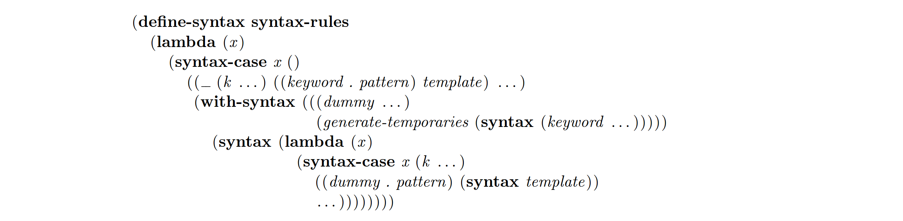Many versions of Scheme provide a version of extend-syntax [5, 3], which is one of the forerunners to the system described in this article. It too can be defined in terms of syntax-case if we are willing to use syntax in place of quote to mark pieces of fenders and “with” clauses that are to be expanded by the template expander. The first version below shows extend-syntax without with forms, and the second allows with forms (but only at the beginning of the output template).


Using the latter version of extend-syntax, letrec can be defined as follows:

Many of the macro definitions given earlier would be shorter using syntax-rules, and shorter still using extend-syntax. Which to use is really a matter of taste.
The next few examples involve the insertion of implicit identifiers into the output of a macro. The first of these defines a loop macro that implicitly binds the variable exit to a continuation within the body of the loop:

Using this definition, the expression (loop 1) loops indefinitely, but:

terminates on the third iteration. Also:
terminates and returns 0, but:
does not terminate.
In order to create a binding that captures references to exit within the loop, we create an implicit identifier using the macro’s keyword as a template. An implicit identifier is one that behaves as if it had been introduced at the same time and in the same place as the template identifier, in this case the keyword in the macro call. It is as if the implicit identifier had been part of the original macro call and had been plucked from the input rather than synthesized by implicit-identifier.
The binding introduced for exit might just as well be a macro binding:
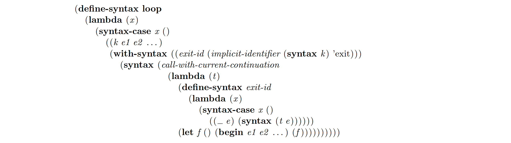All of the examples given above behave the same with either definition of loop, and in fact, the generated code would be nearly identical.
Another common use for implicit identifiers is in the definition of structure facilities. The following definition for define-structure is an adaptation of one that appeared in The Scheme Programming Language [3]. This system represents structures as vectors of length n + 1, where n is the number of fields, the first element is the name of the structure, and the remaining elements contain the fields’ values. A structure definition expands into a begin containing a sequence of procedure definitions for a constructor, a structure “type” predicate, and access and assignment procedures for each field.
The names for these procedures are constructed as implicit identifiers from the name given for the structure and the field names. Most of the work is done in the local help procedure construct-name. This procedure takes a template identifier and a list of identifiers and strings to be used in forming the implicit identifier’s name.
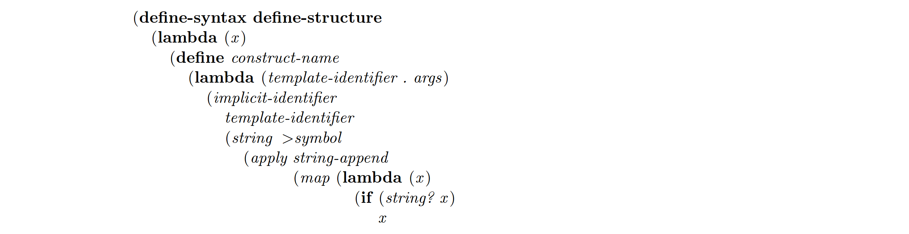 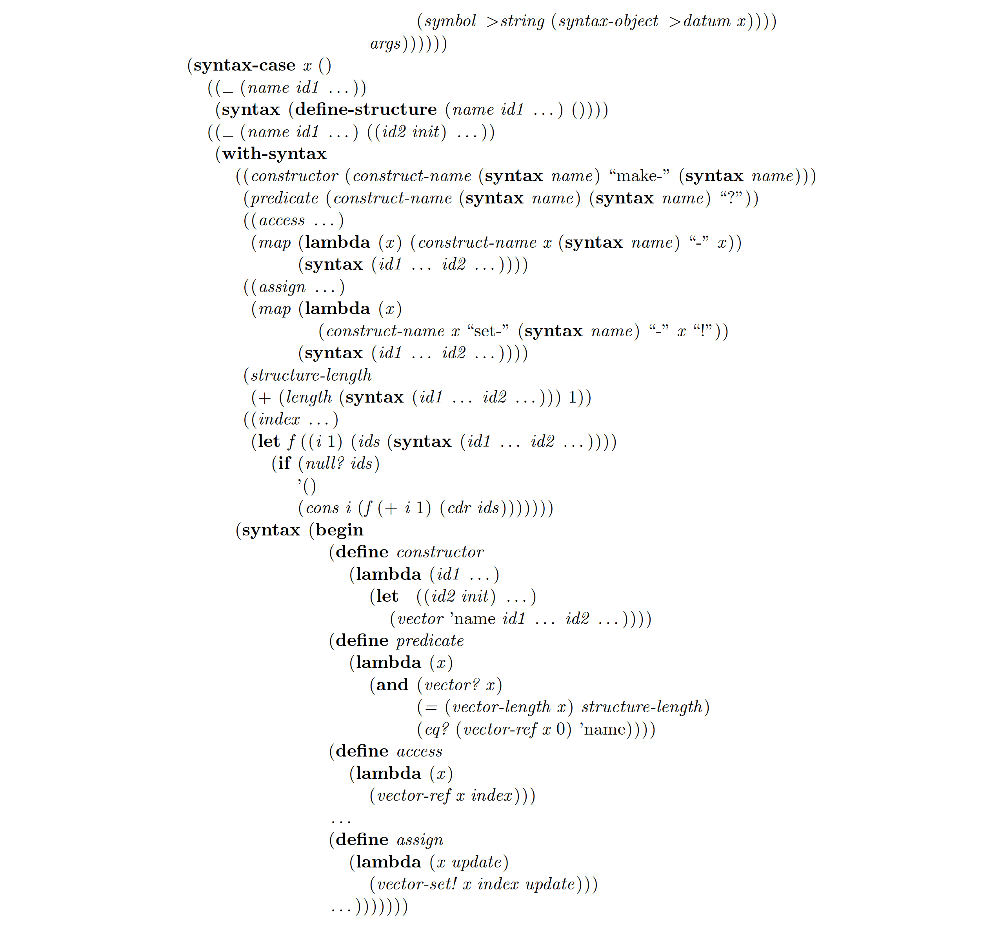Notice the choice of template identifier in each call to construct-name. For the constructor and predicate identifiers, the structure name is used, and for the access and assignment procedure identifiers, the corresponding field name is used. These are the most logical choices, although there is no difference except for define-structure macro calls that are built up incrementally.
Any of the generated procedure definitions could easily have been macro definitions instead. For example, to define the accessors as macros, it would be necessary only to replace:
with:
Using either version, a define-structure form may appear anywhere a define or define-syntax form may appear, including within a sequence of definitions at the front of a lambda or similar body.
The following definition defines quasiquote; it is more complicated than necessary because it attempts to minimize the amount of consing. Although there are no new concepts introduced by the example, it is a good example of a macro that traverses the entire input expression rather than just its top-level structure. A much simpler version could be defined by replacing calls to gen-cons, gen-append, and gen-vector with syntax for calls to cons, append, and list->vector.
 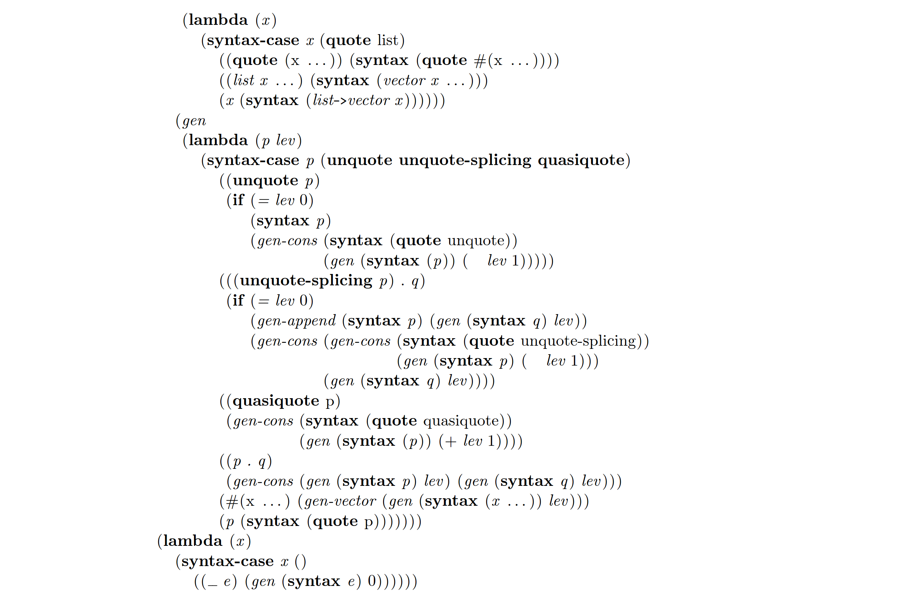
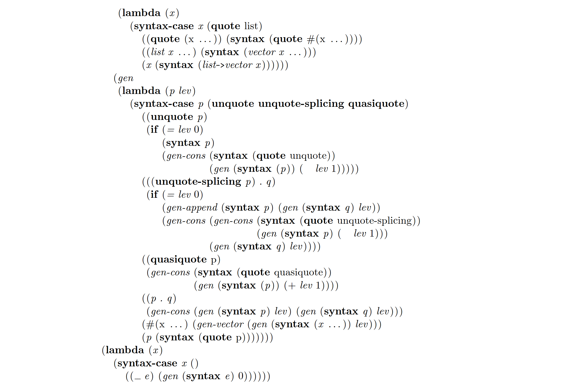
As with references to not inserted by the unless transformer defined earlier, the inserted references to cons, list, and other primitive names resolve to the top-level bindings even if other bindings for these names are lexically apparent within the scope of a quasiquote expression:

The final example of this section shows how a macro generating another macro can include ellipses in the generated macro using the “escape sequence” ( . . . . . . ):

Following this, (be-like-begin sequence) would allow sequence to be used interchangeably with begin.
If there are many ellipses in the generated macro, it may be preferable to bind a local pattern variable to ( . . . . . . ) and to use this variable in place of the ( . . . . . . ) in the definition:

Implementation of the macro system is surprisingly straightforward. In this section we briefly describe how our implementation works. Other strategies may be possible.
Implementing the basic macro expansion algorithm is a procedure called the expander, which is called before compilation of each expression entered from the keyboard or loaded from a source file. The expander traverses the input expression, expanding any macros it encounters and handling core forms such as lambda, if, and quote. The expander maintains a lexical compile-time environment that contains information about lexically visible identifiers: macro keywords, lexical variable names, and pattern variable names. As the expander enters the scope of a lexical binding construct such as lambda, syntax-case, or letrec-syntax, the compile time environment is augmented with information about the new bindings. Upon leaving the scope, this information is dropped. For macro keywords, the lexical compile-time environment holds the associated transformers. For pattern variable names, it holds the nesting depths, i.e., the number of levels of nested ellipses by which the pattern variable was followed. For lexical variable names, it records nothing more than their existence.
Since identifier bindings may shadow enclosing identifier bindings, only the most recently encountered binding of any type is relevant during expansion. A top-level compile-time environment is maintained as well to hold bindings from top-level macro keywords to the associated transformers. An identifier binding in the top-level compile-time environment is relevant at a given point only if there is no lexical binding for the identifier. The phrase “compile-time environment” refers to the combined lexical and top-level environments; identifiers looked up in the compile-time environment are first looked for in the lexical environment, and if no binding exists there, then in the top-level environment.
Within the scope of a lexical binding for an identifier x, the expander replaces all occurrences of x with a new identifier. This new identifier contains the original name of the identifier, a unique generated name, and the same set of marks (described below) as x. The original name is retained in case the identifier is ultimately used as symbolic data, i.e., in case it eventually appears within a quote expression. The newly generated name is used to look up the identifier’s meaning in the compile-time environment. Thus, the lexical compile-time environment maps generated names to binding information.
For efficiency, this substitution is actually done incrementally, not all at once, by creating a syntax object encapsulating the outermost form with an environment mapping the old identifiers to the corresponding new identifiers. Then, as the form is destructured and traversed by the expander and macro transformers (using syntax-case), the encapsulation is “pushed down” into the subforms and the pending substitutions are performed.
In the case of lexical (lambda-bound) variables, the generated names become the formal parameter names of the generated lambda expression. For pattern-variables within syntax-case patterns, a lambda binding for each of the generated names is established within the fender and output expressions; these names are bound at run time to the corresponding pieces of the input. For a pattern variable followed by an ellipsis, the generated name is bound to a list of the corresponding forms; for two levels of ellipses, a list of lists of the corresponding forms; and so on. For let-syntax and letrec-syntax forms, the generated name is not bound at run time, but is used solely as a handle for the binding in the compile-time environment.
When an identifier reference is encountered by the expander, the expander’s action differs depending upon the context of the reference and the visible compile-time binding of the identifier.
If the identifier occurs in the keyword position of a form that might be a macro call and it is found to be a macro keyword in the compile-time environment, the associated transformer is invoked as described below.
If an identifier encountered by the expander is an apparent variable reference and it is bound as a lexical variable (lambda-bound variable), it is converted into a reference to the corresponding generated name. If it is not bound anywhere, it is assumed to be a reference to a top-level binding and is thus expanded into its original name. An apparent variable reference to any other type of identifier (macro keyword or pattern variable) is an invalid reference, which is signaled by the expander.
If an identifier appears within a syntax form and it is bound as a pattern variable in the compile-time environment, the generated name and the nesting level are used by the expander to generate code that inserts the corresponding subforms into the output. Any other identifier appearing within a syntax form is inserted into the output unchanged.
If an identifier appears within a quote form, it is stripped down to the original name.
A macro call is handled as follows. First, a new “mark” is created. Each mark is distinguishable from other marks, but it is otherwise unimportant how marks are represented. We currently represent marks as integers. This mark is attached to each identifier in the input to the macro, and the resulting expression is passed to the transformer. Identifiers in the output from the transformer are similarly marked, except that identifiers to which the mark is already attached are stripped of the mark. In this way, the mark “sticks” only to identifiers introduced by the transformer; it does not stick to identifiers that the transformer copies from the input into the output. As with the substitution of old identifiers with new identifiers described above, this marking is done incrementally for efficiency; marks to be applied are recorded along with substitutions to be performed in each syntax object.
The marks are used to inhibit substitution of macro-introduced lexical identifiers that should not be captured by bindings in the context of the call nor (if bound by the output of the macro) capture references in the input to the call. If the marks on an occurrence of an identifier within the scope of a lexical binding construct are not the same as the marks on the bound identifier, the occurrence is left alone even if the identifiers are otherwise equivalent.
For example, consider the expansion of:
using the two-subexpression version of or below:
The expression above should evaluate to the top-level value of the variable t. As the expansion unfolds, observe how substitution and marking prevent the binding for if in the source expression from interfering with the macro’s use of if and the macro’s binding for t from interfering with the source expression’s reference to t.
For simplicity, we assume that let is handled directly by the expander; with a little more tedium we could first expand it into the corresponding lambda application. We also assume that identifier substitutions and marks are applied immediately rather than incrementally.
For purposes of this discussion, identifiers are shown as ordered triples of the form:

The original input is thus:

On the first step, since let has no other binding but its original binding in the top-level environment, the bound variable from the outer let expression is replaced with the generated name g0001, and the occurrence of the identifier within the scope of the let expression is replaced with a new identifier that contains both the generated and original names:

Existence of this binding for g0001 is also recorded in the lexical compile-time environment. Next, the transformer for or2 is invoked, with identifiers in its input marked by mark m1 :

The transformer for or2 produces:
Next, within the output from the or2 transformer, identifiers not marked with m1 are so marked while the m1 mark is removed from the others (since identical marks cancel).

Only the current name is relevant when an identifier’s binding is determined in the compile-time environment, so even though the mark m1 has been attached to the identifier let, it still resolves to the top-level definition for let. Therefore, the bound identifier is replaced with a generated name and occurrences of the identifier (with the same current name and marks) are replaced with a new identifier within the scope of the let expression:
Existence of this binding for g0002 is also recorded in the lexical compile-time environment, which still also holds a record of the binding for g0001.
Since g0001 is recorded as a lexically bound variable in the compile-time environment, the occurrence of (if, g0001, {}) expands into a reference to g0001. Thus, the output expression so far consists of the following:

with the last line as yet unexpanded. Since the current name of the identifier (if, if, {m1 }) is if, the last line is recognized as an if expression:

Only the three variable references within this if expression remain to be expanded. The current name, g0002, for the first and second of these is recorded as a lexical variable in the compile-time environment so both simply expand into g0002. The current name for the third is t, which has no binding in the lexical compile-time environment; therefore it expands into a top-level reference to t. Thus, the final output from the expander is:
Responsibility for “pushing down” the substitutions and markings in the actual implementation is given to syntax-case expressions. As a syntax-case matches the input against a pattern, any syntax objects that must be destructured are destructured only as far as necessary to perform the match, and the substitutions and markings are transferred to the subexpressions of the destructured form. If the match is successful, the resulting values are bound to the pattern variables (actually, to the corresponding generated names) within the fender and output expressions. Subforms of syntax expressions within the scope of these pattern variables are rebuilt as necessary to insert these values. All substitutions and marks attached to pieces of the output from syntax are retained so that, when they are subsequently inserted into the output of a macro, identifiers within these pieces refer to the bindings visible where they first appeared. The expander strips all such information from quote forms (using the equivalent of syntax-object >datum), since quoted symbols are used as ordinary symbolic data.
Two identifiers are bound-identifier=? if and only if they have the same current name (which implies they have the same original name) and the same marks. Two identifiers are free-identifier=? if and only if they have the same current name. This is a reflection of the compile-time environment lookup and identifier replacement rules: only the current name is relevant for determining an identifier’s binding, while both the current name and the marks must agree for an identifier to be replaced within the scope of a lexical binding construct.
Two identifiers that are bound-identifier=? may not be eqv?, since other information (including source annotations) may be present in the identifier structure. Thus, it is rarely useful to use eqv? on identifiers.
The implementation of implicit-identifier is straightforward, although it does place constraints on the implementation that otherwise would not be necessary. Specifically, all identifier substitutions required by binding forms visible to an occurrence of an identifier must be recorded with the identifier, including those substitutions that do not affect the identifier due to a difference in current name or marks. An implicit identifier is formed by copying the substitutions and marks from the template identifier into a new identifier. The original name of the new identifier is given by the second argument to implicit-identifier, and the current name is determined by the substitutions and marks recorded with the template identifier.
This report is dedicated to my good friend and colleague, Bob Hieb, who was killed along with his eleven-year old daughter Iva in a tragic car accident near their home on April 30, 1992. Bob and I worked on the macro system described herein for several years, and many of the most important concepts and algorithms were developed by Bob, who had adopted it as his dissertation project.
I would like to thank Carl Bruggeman for his detailed and thoughtful comments on drafts of this report, and also for the use of his “Scheme TeXer,” with which the examples contained within this report were formatted. I would like to thank David Eby, George Springer, Dan Friedman, and David Moon as well for their helpful comments.
[1] William Clinger and Jonathan Rees. Macros that work. In Conference Record of the Eighteenth Annual ACM Symposium on Principles of Programming Languages, pages 155–162, January 1991.
[2] William Clinger, Jonathan A. Rees, et al. The revised4 report on the algorithmic language Scheme. LISP Pointers, 4(3), 1991.
[3] R. Kent Dybvig. The Scheme Programming Language. Prentice-Hall, 1987.
[4] Robert Hieb, R. Kent Dybvig, and Carl Bruggeman. Syntactic abstraction in scheme. Technical Report 355, Indiana Computer Science Department, June 1992.
[5] Eugene Kohlbecker. Syntactic Extensions in the Programming Language Lisp. PhD thesis, Indiana University, Bloomington, August 1986.
[6] Eugene Kohlbecker, Daniel P. Friedman, Matthias Felleisen, and Bruce Duba. Hygienic macro expansion. In Proceedings of the 1986 ACM Conference on Lisp and Functional Programming, pages 151–161, 1986.